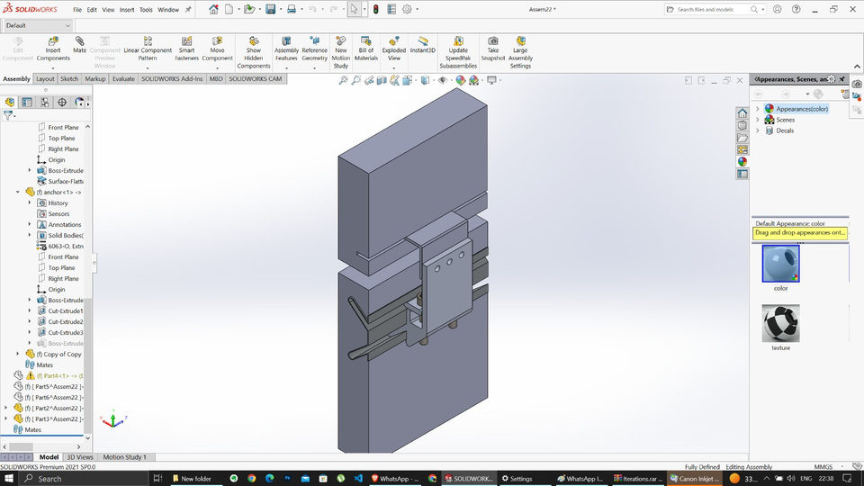
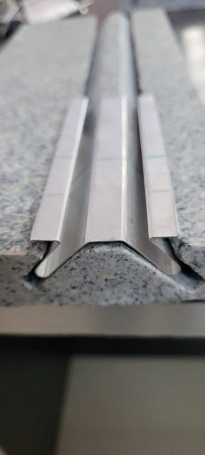
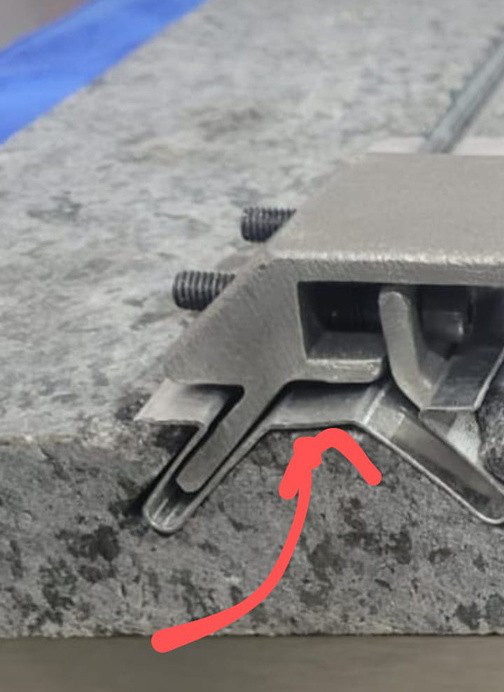
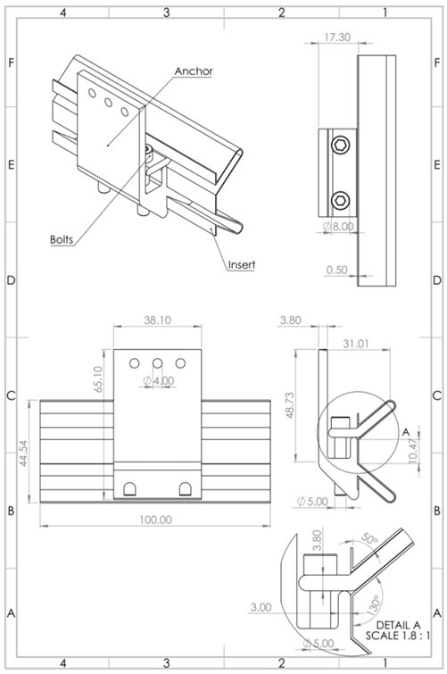
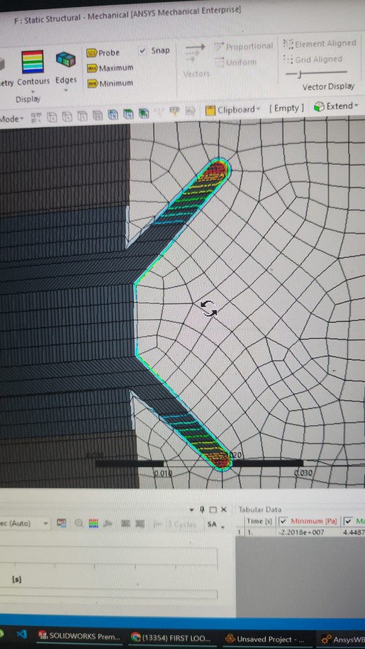

Stone cladding anchor system
A mechanical anchor that fixes brittle natural-stone cladding to metal sub-structures without adhesives or through-bolting the stone. It uses a lever action to spread load along the stone edge.

The challenge
Stone cladding is heavy, brittle and notch-sensitive. Point loads from drilled fixings can crack panels, and adhesive-only systems raise long-term safety concerns. The client needed a mechanical anchor that was strong, corrosion resistant, cheap to produce in volume, and compliant with the International Building Code.
Key decisions
3-part lever mechanism
Base anchor, actuating arm and bolts. Tightening the bolt rotates the arm into a kerf in the stone edge, clamping it and spreading the force along the edge instead of concentrating it at a point.
Aluminium 6063 extrusion
Chosen for strength-to-weight, natural corrosion resistance and low cost. A constant profile means one extrusion die, and parts are simply cut to length.
Designed for manufacture
Full assembly modeled in SolidWorks, with GD&T-controlled manufacturing drawings for the extrusion profile and the machined features.
FEA validation
Stress and deformation analysis in ANSYS to confirm load capacity and safety margins against IBC structural requirements.
CAD, drawings & field





Results
Part assembly: base anchor, actuating arm, bolts
Load performance and safety margins verified by FEA
Constant extrusion profile, cut to length for scalable production
The result was a commercially viable, scalable anchor for the construction industry. It is lightweight, corrosion resistant and cheap to make, and it is designed around the stone's weaknesses.